Interface para tablet do Cliente Web
A interface para tablet do Cliente Web é otimizada para telas sensíveis ao toque e é a escolha padrão para navegadores de tablets, como o Safari no iPad, Chrome em tablets Android, ou Silk no Kindle Fire. Ao fazer login a partir desses dispositivos, você é redirecionado automaticamente para a Interface do Tablet.Interface do Tablet PC não depende de JavaScript e, portanto, é compatível com as versões de navegador antigo ou móveis que não podem manipular Cliente Web completo. Todas as operações exigem apenas o botão esquerdo do mouse e clicar em elementos da Web padrão, como caixas de seleção, botões e menus suspensos Não existem menus de contexto ou pop-ups de janela.
Toque de tela
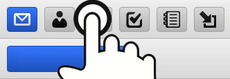A barra de ferramentas de ícones dá acesso a todas as funções essenciais de e-mail e groupware via toque na tela divididas em escopos correspondentes aos ícones coloridos no menu superior.
- Catálogo de Endereços
- Calendário
- Tarefas
- Notas
- Arquivos
Para receber novas mensagens, clique no ícone de envelope na parte superior da tela.
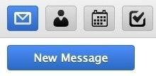
Para começar a redigir uma nova mensagem, crie um novo contato ou uma lista de distribuição, um novo convite de reunião ou evento, uma nova tarefa, uma nova nota ou faça o upload de um novo arquivo, clique no ícone correspondente na barra de ferramentas e clique no botão Novo destacado.
Para mensagens de hoje, só a hora é mostrada. Para e-mails mais antigos, é mostrada apenas a data. Se quiser ver ambas as informações, passe o mouse sobre a mensagem -- a data e a hora são exibidas. Para ver cabeçalhos completos, clique no botão Detalhes.
Rotação
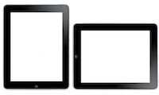A Visualização Horizontal mostra todas as suas pastas favoritas em uma lista do lado esquerdo. A pasta atual está em negrito com um ponto. Para adicionar mais pastas à lista, use a opção Gerenciamento de Pastas. A Visualização Vertical recolhe a lista de pastas em uma lista suspensa à direita Toque no botão com o nome da pasta atual para acessar outras opções de pasta.
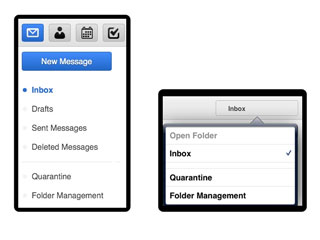
A opção de Gerenciamento de Pasta permite acessar ou criar um atalho para uma pasta que não está listada ainda e tê-la rapidamente acessível. Ele também permite adicionar, renomear, remover pastas ou tornar padrão uma pasta.
Gestos direcionais
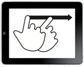Gestos direcionais (swiping) naturais são suportados em todas as visualizações de página (lista de e-mails, contatos, tudo calendário vistas e assim por diante) e permite avançar e voltar pelas listas como folhear páginas em um livro:
- Próxima página: da direita para a esquerda
- Página anterior: da esquerda para a direita (como na imagem acima)
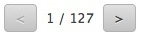
Como uma alternativa a um gesto direcional com o dedo, você pode usar controles de paginação direita (repetidos na parte superior e inferior para facilitar o acesso), que também mostram a posição atual e o número total de páginas.
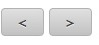
Você pode usar gestos direcionais para navegar por mensagens, contatos, anotações etc. Como alternativa, existem setas para ir para a próxima mensagem ou para a anterior depois de abrir uma mensagem.
Resposta rápida
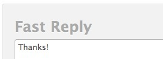Quando você não precisa de formatação especial ou definir opções de entrega, a Resposta rápida lhe oferece exatamente isso -- uma área de texto para responder ao remetente original da mensagem que você está atualmente vendo.
Selecionar
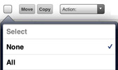Isso se aplica somente a itens na página atual.
- Para selecionar todos os itens na página, usar Todos ou limite a seleção para Lidos ou Não lidos
- Para desmarcá-las, use Nenhum
- Use Inverter seleção para selecionar todos, exceto aqueles que têm atualmente uma marca de seleção ao lado deles
Ou use as caixas de seleção individuais ao lado de cada item na lista para fazer sua seleção e, em seguida, execute ações com eles.
Para selecionar todas as mensagens na pasta, talvez você precise aumentar o número de itens listados em Configurações -- Geral.
Gerenciar
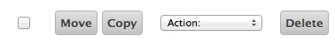Após ter selecionado um ou mais itens (a caixa de seleção está marcada), você pode executar uma ação sobre eles usando os botões de ações (por exemplo, Excluir e, em seguida, você será solicitado a confirmar a exclusão).
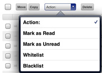
Você pode selecionar outras ações pouco frequentes a partir do menu suspenso Ação: (por exemplo, Marcar como Não Lida, Lista negra).
Pesquisar
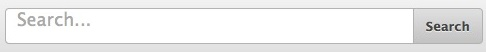Digite uma frase para procurar e pesquise em todos os aspectos dos dados atualmente exibidos (em assuntos/remetentes/destinatários de e-mail, em nomes/endereços de contatos etc. ) ou use palavras-chave para limitar a pesquisa a um critério específico (por exemplo, subject:escritório) A lista de palavras-chave disponíveis está no final desta ajuda.
Para cancelar a pesquisa, toque em qualquer ícone da barra de ferramentas ou uma pasta, ou exclua tudo na barra de ferramentas de pesquisa e clique em Pesquisar.
Combata o spam
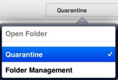Use a opção Quarentena na lista de pastas para acessar sua lista branca e sua lista negra. Aqui você pode ver os endereços de e-mail que são sempre aceitos ou sempre rejeitados. Você pode excluir os endereços ou movê-los na lista negra para lista branca e vice-versa.
Para adicionar um remetente de spam ou de mensagens comerciais não solicitadas a uma lista negra:
- Na lista Quarentena, selecione pasta Lista negra e clique o botão Novo item.
- No modo de exibição E-mail, marque a caixa de seleção ao lado do e-mail e selecione Lista negra em Ações menu
- No modo de exibição E-mail, marque a caixa de seleção ao lado do e-mail, clique em Mover e selecione.
Para certificar-se de que você pode acessar sua pasta de Spam no menu Copiar/Mover, use a opção Gerenciamento de pastas e vincule a pasta Spam para fixá-la na sua lista de pastas favoritas.
Gerenciar pastas
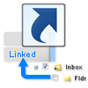Vincular pastas significa criar um link para essa pasta na lista de pastas favoritas Um link permite que você tenha as pastas mais importantes mais facilmente acessíveis a partir da lista de pastas e nas opções de Copiar/Mover. Você também pode nomear o link com um nome descritivo -- ele não precisa corresponder com o nome real da pasta. O nome personalizado aparecerá entre parênteses na árvore de Gerenciamento de Pastas.
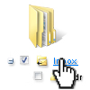
Abrir a pasta clicando no nome da pasta é útil para acessar uma pasta que não está vinculada no menu à esquerda e que você não acessa com frequência. A pasta será aberta como qualquer pasta vinculada.
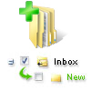
Adicionar pasta cria uma nova pasta. Você precisa especificar o tipo de pasta -- se você vai querer armazenar e-mail, contatos ou outros tipos de item na nova pasta.
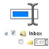
Renomear pasta irá renomear a pasta. Se não houver um link para essa pasta no menu à esquerda, o link não será afetado.
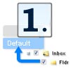
O comando Tornar pasta padrão muda a pasta para onde as mensagens são recebidas, enviadas ou salvas. Pastas padrão estão sempre acessíveis na lista de pastas favoritas e não podem ser renomeadas ou excluídas.
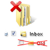
O comando Remover pasta exclui permanentemente todos os conteúdos da pasta (quando você clica em "Esvaziar") ou exclui permanentemente todo o conteúdo da pasta e a própria pasta (quando você clica em "Excluir").
Personalizar
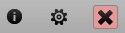O botão Configurações (entre os ícones de Ajuda e Logout no canto superior direito) permite que você personalize a interface Tablet. Várias configurações estão organizadas em categorias que aparecem como pastas (no lado esquerdo na visualização vertical ou no na lista suspensa à direita na visualização horizontal).
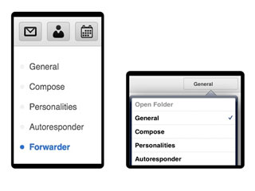
- Geral -- Alterar o formato de data/hora, especificar o número de itens na página, ativar Lixeira, adicionar automaticamente destinatários à lista de contatos, alterar senha e outros comandos.
- Redigir -- Configurar para sempre solicitar confirmações de mensagem lida, sempre colocar mensagens enviadas na pasta Itens enviados, editar sua assinatura, alterar fonte padrão e outros comandos.
- Personalidades -- Adicionar/Editar/Excluir múltiplas personalidades (nome completo e endereço de e-mail como ele aparece para o destinatário do e-mail).
- Autorrespondedor -- Uma função de resposta automática com configurações úteis, como responder uma vez para cada destinatário, responder somente em determinadas horas do dia ou nunca responder a remetentes especificados.
- Encaminhador -- Encaminhar ou copiar mensagens de e-mail recebidas para qualquer outro endereço de e-mail.
Cancelar
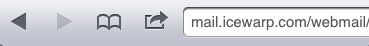Use o botão Voltar do navegador para retornar para onde você estava ou cancelar a edição de uma mensagem, contato ou evento de calendário. Qualquer edição que você fez será perdida. Ou simplesmente clique em qualquer ícone da barra de ferramentas.
Alternar
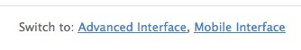Usando os links para Interface avançada e Interface de celular, você pode alternar rapidamente entre as interfaces, sem a necessidade de fornecer seu nome de login e senha novamente. A interface avançada pode não funcionar se você estiver usando um navegador ou celular mais antigos.
SmartAttach
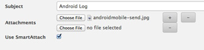Em tabletes Android e em navegadores para desktop, você pode fazer upload de anexos de mensagens. Assinalando a caixa de seleção "Usar SmartAttach", anexos serão armazenados no servidor (e em seus arquivos) e entregues via links de download incorporados no e-mail. Isso torna a entrega para usuários de celular mais rápida e eficiente.
Palavras-chave de pesquisa
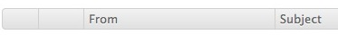Nem todas as palavras-chave se aplicam a todos os escopos, por exemplo, subject: aplica-se apenas a mensagens de e-mail, enquanto no calendário você precisará usar a palavra chave title:. Várias palavras-chave são por padrão vinculadas com o operador AND (não é necessário especificá-lo) e todos os critérios devem ser atendidos, ou você pode usar os operadores lógicos OR e NOT para que todos os critérios seguintes possam ser opcionais ou para localizar itens que não atendem aos critérios.
- from: Usado para especificar o remetente (from:Ana)
- to: Usado para especificar um destinatário (to:Carlos)
- subject: Pesquisa palavras no assunto (subject:Jantar)
- cc: Usado para especificar os destinatários no campo Cc:
- bcc: Usado para especificar os destinatários no campo Cco:campo
- fulltext: Pesquisa no corpo das mensagens (fulltext:teste)
- priority: Procurar por prioridade highest, high, normal, low, lowest (priority:high)
- after: Pesquisa mensagens enviadas depois da data informada (after:2004/04/16)
- before: Pesquisa mensagens enviadas antes da data informada (before:2004/04/16)
- title: Usado para especificar o título de um item (title:Teste)
- description: Usado para especificar uma descrição ou nota (description:Teste)
- name: Usado para especificar o nome do contato
- email: Usado para especificar o e-mail
- keyword: Pesquisa itens com a marca especificada (tag:Negócios)
- tag: Pesquisa itens com a marca especificada (tag:Negócios)
- greater: Pesquisa dependendo do tamanho em kB, se maior que o valor informado (greater:1024)
- smaller: Pesquisar dependendo do tamanho em kB, se menor que o valor informado (smaller:1024)
- company: Pesquisa contatos na empresa (company:IceWarp)
- department: Pesquisa contatos no departamento (departament:TI)
- location: Pesquisa contatos no local (location:Londres)